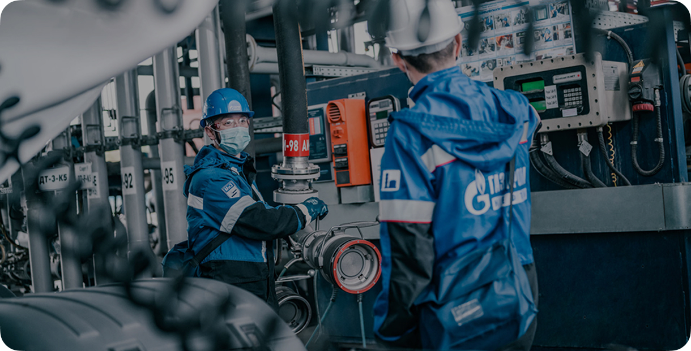

Полный комплекс услуг по охране труда «под ключ»
С подробной тарифной системой вы можете ознакомиться на нашем сайте

Оставьте заявку на расчёт стоимости
Нажав кнопку, вы даёте согласие на обработку персональных данных и соглашаетесь с политикой конфиденциальности
С подробной тарифной системой вы можете ознакомиться на нашем сайте
Оставьте заявку на расчёт стоимости
Нажав кнопку, вы даёте согласие на обработку персональных данных и соглашаетесь с политикой конфиденциальности
СЕКЦИЯ 17
СЕКЦИЯ 34
Нам доверяют
СЕКЦИЯ 04
Репутационная декларация
0
лет на рынке
0
филиалов и представительств
0+
успешно выполненных проектов
0
проектов федерального назначения
0
аккредитованных лабораторных центров
СЕКЦИЯ 32
Уровни сертификации национального стандарта «Клевер»
Уровень вашего сертификата зависит от количества набранных баллов, которые формируют процент соответствия объекта критериям стандарта «Клевер»:
0%
«Бронзовый»
0%
«Серебряный»
0%
«Золотой»
0%
«Платиновый»
0%
«Бриллиантовый»
СЕКЦИЯ 33
Уровни сертификации
Удовлетворительно
Хорошо
Отлично
СЕКЦИЯ 05
Ключевые проекты

Охрана труда
Экологическое проектирование
Изыскательные работы
Экологический контроль
Стратегическое партнёрство с крупнейшей энергетической компанией
Подробнее
Охрана труда
Экологическое проектирование
Изыскательные работы
Экологический контроль
Стратегическое партнёрство с крупнейшей энергетической компанией
ПодробнееСтратегическое партнёрство с крупнейшей энергетической компанией

Проведенные работы:
Охрана труда
/ СОУТ
/ Производственный контроль
Экологическое проектирование
/ СЗЗ
Изыскательные работы
/ Инженерно-экологические изыскания
Экологический контроль
/ Мониторинг
СЕКЦИЯ 09
Онлайн-система управления охраной труда
«EcoStandard.Soft — комплексная автоматизация документооборота охраны труда и корпоративного обучения»
Участник Инновационного центра «Сколково»
ЭЦП. Подписание документов онлайн
Включено в единый реестр российского ПО

Участник Инновационного центра «Сколково»ЭЦП. Подписание документов онлайнВключено в единый реестр российского ПОРаботает с другими программами и кадровыми системами2 243 компании пользуются сервисомСистема интегрирована с реестром Минтруда
Попробуйте EcoStandard.soft бесплатно и убедитесь в его эффективности
Попробовать бесплатноРаботает с другими программами и кадровыми системами
2 243 компании пользуются сервисом
Система интегрирована с реестром Минтруда
СЕКЦИЯ 10
Календарь мероприятий
1
января,понедельник
января 2025
30
31
01
02
03
04
05
06
07
08
09
10
11
12
13
14
15
16
17
18
19
20
21
22
23
24
25
26
27
28
29
30
31
01
02
03
04
05
06
07
08
09
Нет запланированных мероприятий
Ближайшие мероприятия месяца:
1 из 12
13.01
Экологическое проектирование
Круглый стол «Санитарно-защитная зона: правила разработки и контроля. Что изменилось?»
Ближайшие мероприятия:
02.01
Экологическое проектирование
03.01
Экологическое проектирование
1
января,понедельник
января 2025


Нет запланированных мероприятий
30
31
01
02
03
04
05
06
07
08
09
10
11
12
13
14
15
16
17
18
19
20
21
22
23
24
25
26
27
28
29
30
31
01
02
03
04
05
06
07
08
09
СЕКЦИЯ 19
Проектный подход: бережное отношение к вашим ресурсам
За 28 лет работы в производственной безопасности мы так выстроили рабочий процесс, что риск ошибок сведён к минимуму, а ваше участие в рутинных процессах почти не требуется. Больше не нужно тратить своё время на переделывание документов и проверки. Доверьте EcoStandard group всю работу по охране труда — проектный метод позволяет нам эффективно и последовательно выстраивать процессы СУОТ.
Что нам в этом помогает?

Охрана труда
Экологическое проектирование
Изыскательные работы
Экологический контроль
Физическое присутствие на вашем производстве с тщательным аудитом и контролем
Охрана труда
Экологическое проектирование
Изыскательные работы
Экологический контроль
Ориентир на вашу сферу деятельности и размер компании
Физическое присутствие на вашем производстве с тщательным аудитом и контролем
Выделенный отдел инспектирования
Располагаем ресурсами, чтобы провести физический аудит предприятия в любой точке России, от Калининграда до Камчатки.
Приедем к вам и проверим реальные условия труда на объектах.
СЕКЦИЯ 23
Система автоматизации охраны труда, разработанная нашими экспертами
EcoStandard.soft — это единая онлайн-система. В одном сервисе вы получаете три продукта:
Обучение персонала
Управление охраной труда
Электронный документооборот
Обучение персоналаУправление охраной трудаЭлектронный документооборот
Все процессы в одной программе:
инновационная система учёта микротравм, создание карточек СИЗ, инструктажи, оценка профрисков, дистанционная учебная платформа, формирование и подписание документов онлайн.
ПодробнееВсе процессы в одной программе:
инновационная система учёта микротравм, создание карточек СИЗ, инструктажи, оценка профрисков, дистанционная учебная платформа, формирование и подписание документов онлайн.
СЕКЦИЯ 31
Система автоматизации охраны труда, разработанная нашими экспертами
EcoStandard.soft — это единая онлайн-система. В одном сервисе вы получаете три продукта:
Обучение персонала
Управление охраной труда
Электронный документооборот
Электронный документооборот
Обучение персоналаУправление охраной трудаЭлектронный документооборотЭлектронный документооборот
*Средняя годовая стоимость использования подобного IT-продукта на рынке для среднего и крупного бизнеса – от 100 000 рублей в год.
Все процессы в одной программе:
инновационная система учёта микротравм, создание карточек СИЗ, инструктажи, оценка профрисков, дистанционная учебная платформа, формирование и подписание документов онлайн.
Попробовать бесплатноВсе процессы в одной программе:
инновационная система учёта микротравм, создание карточек СИЗ, инструктажи, оценка профрисков, дистанционная учебная платформа, формирование и подписание документов онлайн.
СЕКЦИЯ 36
Что входит в «Путеводитель по СИЗ»?
Для вашего удобства гайд разделён на тематические блоки, которые последовательно раскрывают все аспекты работы с СИЗ
Переход на Единые типовые нормы
В первом разделе справочника эксперты разобрали законодательные положения по СИЗ, которые изменились, новые обязанности работодателя и сотрудника. В нем они также объяснили, зачем нужен переход на ЕТН, как взаимосвязаны ОПР и новые нормы выдачи средств защиты, как и когда обучать работников применению СИЗ.
Как читать сертификат на СИЗ
Из этого блока вы узнаете, какой документ подтверждает соответствие техническому регламенту Таможенного союза, как его читать и на какую информацию обратить внимание.
Обязательная маркировка СИЗ
В третьей главе эксперты рассказали, какие существуют типы маркировок, для чего нужна необязательная маркировка и с какими рисками связано использование немаркированных СИЗ.
СИЗ: как организовать хранение и уход
Правильные уход и хранение средств индивидуальной защиты помогает дольше сохранять защитные свойства и обеспечивать реальную безопасность работников, а также избежать штрафов. На какие законодательные нормы ориентироваться, как грамотно поддерживать эффективность СИЗ — вы узнаете из этого блока Путеводителя.
Как списать и правильно утилизировать СИЗ
В главе разбираем, как оценивать износ средств индивидуальной защиты, а также утилизировать их. Эти процессы чётко не регламентируются законодательно, поэтому рекомендации специалистов будут особенно полезны.
Как не купить контрафактные СИЗ
Раздел посвящён выбору средств индивидуальной защиты. Вы узнаете, на что обратить внимание при закупке и как контролировать качество СИЗ на предприятии. Эти меры помогут обеспечить входной контроль при закупке спецодежды, спецобуви и других средств защиты.
Как правильно подобрать дерматологические средства индивидуальной защиты (ДСИЗ)
В новых Правилах, действующих с 1 сентября 2023 года, понятие «смывающие и обезвреживающие средства» заменено на «дерматологические СИЗ и смывающие средства». Эксперты рассказали, как выбрать дерматологические средства индивидуальной защиты и какими нормами руководствоваться при выдаче. Вы также узнаете, когда нужно обязательная или добровольная сертификация ДСИЗ.
Ответственность
В разделе разобрали, какая ответственность предусмотрена за несоблюдение новых ЕТН. Специалисты составили понятные и подробные таблицы, в которых вы легко найдёте статьи и санкции за их нарушение.
Цифровые СИЗ в России
Редакция собрала информацию о видах цифровых СИЗ, трендах и тенденциях цифровизации средств индивидуальной защиты в России, а также разобрала вместе с экспертами, насколько выгодно и эффективно внедрение таких видов СИЗ на предприятии.
Новинки СИЗ
Этот блок будет полезен тем, кто следит за новыми разработками в области СИЗ. Консультанты спецвыпуска оценили рынок, нашли самые интересные решения и проверенных производителей — вам остаётся только выбрать и заказать подходящий вариант.
Переход на Единые типовые нормы
В первом разделе справочника эксперты разобрали законодательные положения по СИЗ, которые изменились, новые обязанности работодателя и сотрудника. В нем они также объяснили, зачем нужен переход на ЕТН, как взаимосвязаны ОПР и новые нормы выдачи средств защиты, как и когда обучать работников применению СИЗ.
Обязательная маркировка СИЗ
В третьей главе эксперты рассказали, какие существуют типы маркировок, для чего нужна необязательная маркировка и с какими рисками связано использование немаркированных СИЗ.
Как списать и правильно утилизировать СИЗ
В главе разбираем, как оценивать износ средств индивидуальной защиты, а также утилизировать их. Эти процессы чётко не регламентируются законодательно, поэтому рекомендации специалистов будут особенно полезны.
Как правильно подобрать дерматологические средства индивидуальной защиты (ДСИЗ)
В новых Правилах, действующих с 1 сентября 2023 года, понятие «смывающие и обезвреживающие средства» заменено на «дерматологические СИЗ и смывающие средства». Эксперты рассказали, как выбрать дерматологические средства индивидуальной защиты и какими нормами руководствоваться при выдаче. Вы также узнаете, когда нужно обязательная или добровольная сертификация ДСИЗ.
Цифровые СИЗ в России
Редакция собрала информацию о видах цифровых СИЗ, трендах и тенденциях цифровизации средств индивидуальной защиты в России, а также разобрала вместе с экспертами, насколько выгодно и эффективно внедрение таких видов СИЗ на предприятии.
Как читать сертификат на СИЗ
Из этого блока вы узнаете, какой документ подтверждает соответствие техническому регламенту Таможенного союза, как его читать и на какую информацию обратить внимание.
СИЗ: как организовать хранение и уход
Правильные уход и хранение средств индивидуальной защиты помогает дольше сохранять защитные свойства и обеспечивать реальную безопасность работников, а также избежать штрафов. На какие законодательные нормы ориентироваться, как грамотно поддерживать эффективность СИЗ — вы узнаете из этого блока Путеводителя.
Как не купить контрафактные СИЗ
Раздел посвящён выбору средств индивидуальной защиты. Вы узнаете, на что обратить внимание при закупке и как контролировать качество СИЗ на предприятии. Эти меры помогут обеспечить входной контроль при закупке спецодежды, спецобуви и других средств защиты.
Ответственность
В разделе разобрали, какая ответственность предусмотрена за несоблюдение новых ЕТН. Специалисты составили понятные и подробные таблицы, в которых вы легко найдёте статьи и санкции за их нарушение.
Новинки СИЗ
Этот блок будет полезен тем, кто следит за новыми разработками в области СИЗ. Консультанты спецвыпуска оценили рынок, нашли самые интересные решения и проверенных производителей — вам остаётся только выбрать и заказать подходящий вариант.
СЕКЦИЯ 16
Охрана труда для предприятий: аудит, документы, обучение
Осуществляем лабораторные исследования, испытания и измерения физических и химических факторов.Работаем с физическими и юридическими лицами. Услуги испытательного центра распространяются как на непосредственных заказчиков исследований, так и на другие подрядные лаборатории.
Аутсорсинг (сопровождение) охраны труда
от 15 000 ₽
CONTENT
Оценка профессиональных рисков
от 15 000 ₽
CONTENT
Аудит охраны труда
CONTENT
Услуги по ГО и ЧС
CONTENT
Разработка документов по охране труда и пожарной безопасности
от 25 000 ₽
CONTENT
Расследование несчастных случаев
от 50 000 ₽
CONTENT
Система управления охраной труда (СУОТ)
от 15 000 ₽
CONTENT
Обучение по охране труда
от 900 ₽
CONTENT
Аутсорсинг (сопровождение) охраны труда
от 15 000 ₽
Организуем и проведём инструктажи и обучения, соберём подписи, разработаем документацию и мероприятия, проконтролируем соблюдение требований работниками
Аудит охраны труда
CONTENT
Разработка документов по охране труда и пожарной безопасности
от 25 000 ₽
CONTENT
Система управления охраной труда (СУОТ)
от 15 000 ₽
CONTENT
Оценка профессиональных рисков
от 15 000 ₽
CONTENT
Услуги по ГО и ЧС
CONTENT
Расследование несчастных случаев
от 50 000 ₽
CONTENT
Обучение по охране труда
от 900 ₽
CONTENT
СЕКЦИЯ 42
TITLE
DESCRIPTION
Стоимость СОУТ для 1 категории
Офис, образовательные учреждения (школы, детские сады, университеты и т.п.)
Арматурщики
Арматурщики
Арматурщики
Арматурщики
От 1 до 20 рабочих мест
1 780 – 30 000 ₽
Более 20 рабочих мест
925 – 1 600 ₽
Стоимость СОУТ для 2 категории
2–3 параметра (в том числе медицинский персонал)
Арматурщики
Арматурщики
Арматурщики
Арматурщики
От 1 до 20 рабочих мест
1 780 – 30 000 ₽
Более 20 рабочих мест
925 – 1 600 ₽
Стоимость СОУТ для 3 категории
4–5 параметров (в том числе производственные списки)
Арматурщики
Арматурщики
Арматурщики
Арматурщики
От 1 до 20 рабочих мест
1 780 – 30 000 ₽
Более 20 рабочих мест
925 – 1 600 ₽
Стоимость СОУТ для 4 категории
Свыше 5 параметров (сложная химия, в том числе сотрудники лабораторий)
Арматурщики
Арматурщики
Арматурщики
Арматурщики
От 1 до 20 рабочих мест
1 780 – 30 000 ₽
Более 20 рабочих мест
925 – 1 600 ₽
СЕКЦИЯ 12
Оставить заявку
Заполните простую форму, и наш специалист свяжется с вами в ближайшее время.
Мы подробно ответим на все ваши вопросы и подберём лучшее решение для вас.
Нажав кнопку, вы даёте согласие на обработку персональныхданных и соглашаетесь с политикой конфиденциальности

СЕКЦИЯ 22
Вы уверены, что ваши сотрудники в безопасности?
Стоимость процедуры начинается от 1,5 млн рублей и зависит от многих факторов: сложности объекта, его расположения, сроков работ, объёмов уже имеющихся у заказчика данных, необходимости проведения лабораторных исследований и измерений, необходимости закупки лицензий на специализированное ПО.
Каждый проект уникален, поэтому стоимость услуги рассчитывается индивидуально для каждого заказчика. Чтобы узнать примерную стоимость вашего проекта и задать любые вопросы по услуге, заполните форму ниже.
Оставьте заявку на консультацию
Нажав кнопку, вы даёте согласие на обработку персональныхданных и соглашаетесь с политикой конфиденциальности

СЕКЦИЯ 47
Вы уверены, что ваши сотрудники в безопасности?
Стоимость процедуры начинается от 1,5 млн рублей и зависит от многих факторов: сложности объекта, его расположения, сроков работ, объёмов уже имеющихся у заказчика данных, необходимости проведения лабораторных исследований и измерений, необходимости закупки лицензий на специализированное ПО.
Каждый проект уникален, поэтому стоимость услуги рассчитывается индивидуально для каждого заказчика. Чтобы узнать примерную стоимость вашего проекта и задать любые вопросы по услуге, заполните форму ниже.
Заполните простую форму, и наш специалист свяжется с вами в ближайшее время.
Мы подробно ответим на все ваши вопросы и подберём лучшее решение для вас.

Нажав кнопку, вы даёте согласие на обработку персональныхданных и соглашаетесь с политикой конфиденциальности
СЕКЦИЯ 20
Мы следуем принципу проектного подхода. Что вы получаете в результате?
Прежде всего мы даём уверенность, что все соответствует закону: документы разработаны правильно и в срок. Вы понимаете статус документов и мероприятий, знаете наши следующие шаги в работе, предупреждены о рисках.
В любой нестандартной ситуации мы предлагаем решения и рассказываем о последствиях, ведь наш принцип — это бережное отношение к вашим ресурсам и финансам

Иван Шевченко
Руководитель департамента охраны труда

СЕКЦИЯ 21
Иван Шевченко
Руководитель департамента охраны труда
Иван Шевченко
Руководитель департамента охраны труда
Развитие культуры безопасности в компании критически важно.
Оно снижает риски травм, повышает ответственность сотрудников, улучшает рабочую атмосферу, делает среду безопасной и открытой.
Например, такой инструмент, как фиксация микротравм при помощи QR-кода, повышает информированность о происшествиях, которые не всегда напрямую связаны с рабочими процессами. В результате возрастает ответственность работников и их доверие компании.
СЕКЦИЯ 66
EcoStandard group реализует для вас
01
EcoStandard Certified Home Care Natural
Безопасный для здоровья и окружающей среды натуральный продукт
02
EcoStandard Certified Home Care
Безопасный для здоровья и окружающей среды продукт
Уровни сертификации
EcoStandard Certified Home Care Natural
EcoStandard Certified Home Care
Не содержит соединений нефтехимической переработки, силиконов, микропластика, токсичный веществ
Натуральные красители
Пищевые красители
Натуральные отдушки
Без тестов на животных
Без компонентов, полученных насильственным способом
Минимальное количество натуральных ингредиентов - 95%
Перерабатываемая упаковка
«Честная» этикетка
Сортировка отходов на производстве
Программы обучения персонала
«Зеленые» программы
СЕКЦИЯ 8
СЕКЦИЯ 15
Прозрачная и комфортная процедура СОУТ
СЕКЦИЯ 26
Ответственность за несоблюдение требований охраны труда
Административная ответственность
За нарушение требований охраны труда работодатель может быть оштрафован по ст.. 5.27.1 КоАП РФ.

СЕКЦИЯ 27

СЕКЦИЯ 30
Член Генерального совета Общероссийской общественной организации «Деловая Россия»
Член Генерального совета Общероссийской общественной организации «Деловая Россия»
Член Генерального совета Общероссийской общественной организации «Деловая Россия»
Член Генерального совета Общероссийской общественной организации «Деловая Россия»
Член Генерального совета Общероссийской общественной организации «Деловая Россия»
Член Генерального совета Общероссийской общественной организации «Деловая Россия»
СЕКЦИЯ 35
Что вы получите?
Этот гайд – пожалуй, самое подробное руководство по работе с СИЗ. В нем вы найдете информацию обо всех аспектах подбора, покупки и использования средств индивидуальной защиты. А удобный PDF-формат позволит в любой момент возвращаться к нужному разделу гайда.
«Консультация» экспертов по любому вопросу, связанному с СИЗ
Путеводитель — это энциклопедия СИЗ, в которой вы найдёте ответ на любой вопрос по подбору, закупке и использованию средств защиты, как если бы обратились за консультацией к специалисту.
Удобное разделение на подтемы
Необязательно читать весь справочник сразу, вы можете возвращаться к актуальной для вас главе в любое удобное время.
Помощь в соблюдении законодательства и защита от штрафов
С этим руководством вы легко и без лишнего стресса перейдёте на новые ЕТН, обеспечите безопасность работников и исключите возможность получения административной или уголовной ответственности.
Понятные инструкции на всех этапах использования СИЗ
В гайде вы найдёте не только справочные материалы и рекомендации экспертов по выбору и закупке средств индивидуальной защиты, но и подробные инструкции по хранению, уходу, списанию и утилизации СИЗ.
СЕКЦИЯ 38
Что вы получите?
Этот гайд – пожалуй, самое подробное руководство по работе с СИЗ. В нем вы найдете информацию обо всех аспектах подбора, покупки и использования средств индивидуальной защиты. А удобный PDF-формат позволит в любой момент возвращаться к нужному разделу гайда.
«Консультация» экспертов по любому вопросу, связанному с СИЗ
СЕКЦИЯ 39
Прозрачная и комфортная процедура СОУТ
Вы заранее ознакомитесь со списком исходной документации
И сможете собрать её в комфортном темпе. Мы также пришлём шаблон приказа о создании комиссии с графиком проведения СОУТ
Для замеров к вам приедут опытные специалисты
С полным комплектом оборудования. Все показатели зафиксируем — в случае претензий от ГИТ вы сможете подтвердить результаты
Вы заранее ознакомитесь со списком исходной документации
И сможете собрать её в комфортном темпе. Мы также пришлём шаблон приказа о создании комиссии с графиком проведения СОУТ
Для замеров к вам приедут опытные специалисты
С полным комплектом оборудования. Все показатели зафиксируем — в случае претензий от ГИТ вы сможете подтвердить результаты
Вы заранее ознакомитесь со списком исходной документации
И сможете собрать её в комфортном темпе. Мы также пришлём шаблон приказа о создании комиссии с графиком проведения СОУТ
Для замеров к вам приедут опытные специалисты
С полным комплектом оборудования. Все показатели зафиксируем — в случае претензий от ГИТ вы сможете подтвердить результаты
СЕКЦИЯ 41
Доверьте СОУТ экспертам — будьте уверены в результате
Штраф можно получить не только из-за отсутствия спецоценки, но и при её неправильном проведении. В нашем штате 100+ специалистов, в том числе врачи-гигиенисты, с опытом от 7 лет в этой процедуре.
Используем методики СОУТ, которые полностью соответствуют требованиям ГИТ
Умеем работать с противоречиями в законодательстве.
Уделяем внимание правовым изменениям и оформляем документы в соответствии с ними
СЕКЦИЯ 43
Лаборатория аккредитована на все виды исследований для СОУТ
В наших лабораторных центрах 1 500+ единиц оборудования и 40+ профильных экспертов.
В ходе СОУТ проводим замеры:
- Взвесей, пыли и химических веществ в воздухе (более 20 параметров).
- Излучения: лазерного, ультрафиолетового, электромагнитного и электростатического полей и т. д.
- Виброакустики (шума, инфразвук и ультразвук, вибрация), освещенности, пульсации света.
- Параметров микроклимата: температурных условий, теплового излучения, скорости движения воздуха (сквозняки, застой и т. п.), влажности воздуха.
Напряженность и тяжесть трудового процесса измеряем с помощью весов, динамометров, дальномеров, секундомеров.
Указываем все в журнале и сохраняем данные, поэтому можем документально подтвердить измерения.
СЕКЦИЯ 44
Ответственность за несоблюдение требований охраны труда
СЕКЦИЯ 46
Что входит в услугу?
Есть два варианта оказания этой услуги: обновление и пересмотр существующих инструкций по охране труда или составление с нуля.
Как мы разрабатываем ИОТ
СЕКЦИЯ 49
Стоимость расследования несчастных
случаев
Стоимость будет отличаться в зависимости от степени тяжести НС, наличия у заказчика нужной документации и других обстоятельств. При расследовании несчастных случаев мы предлагаем три пакета услуг.
СЕКЦИЯ 50
Доступные тарифы
Мы разработали тарифную сетку для более широкого выбора отраслевых и индивидуальных решений. Для консультации оставьте заявку на услугу в форме на этой странице и нажмите кнопку «Отправить» или свяжитесь по телефону с нашим менеджером — он поможет выбрать подходящий вариант, расскажет про все условия и подготовит коммерческое предложение. Заполняя форму, вы даёте согласие на обработку ваших данных.
Стоимость разработки всех видов документации по охране труда, электробезопасности и пожарной безопасности начинается от 20 000 рублей и рассчитывается на основании вашего штатного расписания и перечня используемого оборудования в работе.
СЕКЦИЯ 51
Оценка профрисков для разработки внутренних норм выдачи СИЗ
В оценке профессиональных рисков важно отражать точную деятельность сотрудника. Это будет обоснованием для закупки СИЗ и возможности компенсации, согласно постановлению 767н.
Разработка внутренних норм выдачи СИЗ на основе единых типовых норм (ЕТН) производится с учетом результатов специальной оценки условий труда (СОУТ) и оценки профессиональных рисков (ОПР).
Если в оценке профессиональных рисков не отражены важные факторы (например, низкие температуры) или оценка профрисков не проводилась вообще, вам будет сложно обосновать закупку нужных СИЗ.
В оценке профессиональных рисков важно отражать точную деятельность сотрудника. Это будет обоснованием для закупки СИЗ и возможности компенсации, согласно постановлению 767н.
Разработка внутренних норм выдачи СИЗ на основе единых типовых норм (ЕТН) производится с учетом результатов специальной оценки условий труда (СОУТ) и оценки профессиональных рисков (ОПР).
Если в оценке профессиональных рисков не отражены важные факторы (например, низкие температуры) или оценка профрисков не проводилась вообще, вам будет сложно обосновать закупку нужных СИЗ.
В оценке профессиональных рисков важно отражать точную деятельность сотрудника. Это будет обоснованием для закупки СИЗ и возможности компенсации, согласно постановлению 767н.
Разработка внутренних норм выдачи СИЗ на основе единых типовых норм (ЕТН) производится с учетом результатов специальной оценки условий труда (СОУТ) и оценки профессиональных рисков (ОПР).
Если в оценке профессиональных рисков не отражены важные факторы (например, низкие температуры) или оценка профрисков не проводилась вообще, вам будет сложно обосновать закупку нужных СИЗ.
СЕКЦИЯ 52
Что входит в услугу?
Есть два варианта оказания этой услуги: обновление и пересмотр существующих инструкций по охране труда или составление с нуля.
Как мы разрабатываем ИОТ
01
Эксплуатация
02
Эксплуатация
03
Эксплуатация
04
Эксплуатация
05
Эксплуатация
06
Эксплуатация
07
Эксплуатация
08
Эксплуатация
09
Эксплуатация
10
Эксплуатация
11
Эксплуатация
12
Эксплуатация
СЕКЦИЯ 54
Ответственность за несоблюдение требований охраны труда
Переход на использование новых норм выдачи СИЗ обязателен
Если вы не перешли в установленный срок на Единые типовые нормы выдачи СИЗ, вас ждёт административная ответственность по части 1 статьи 5.27.1 КоАП — предупреждение или штраф в размере от 2 000 до 5 000 рублей.
Если вы не внедрили новые единые типовые нормы выдачи СИЗ и произошёл несчастный случай, наказанием будет уголовная ответственность. По статье 143 УК РФ нанесение тяжкого вреда здоровью человека приводит к:
- Штрафу в размере 400 тыс. рублей или в размере заработной платы (или другого дохода) осуждённого за период до 18 месяцев
- Обязательным работам — от 180 до 240 часов
- Исправительным работам сроком до 2 лет
- Принудительным работам на период до 1 года
- Лишением свободы на 1 год с лишением права занимать определённые должности или заниматься определёнными видами деятельности на срок от 1 года или бессрочно
СЕКЦИЯ 55
Ответственность за несоблюдение требований охраны труда
СЕКЦИЯ 56
Ответственность за несоблюдение требований охраны труда
Комплексное обследование
Анализ воды
Демеркуризация
Анализ воздуха
Виброакустические параметры
Радиация
Микробиология
Анализ почвы
Освещённость
Экологическая справка района
Строительные материалы и мебель
Электромагнитное излучение
СЕКЦИЯ 57
Пример содержания курса
СЕКЦИЯ 59
Дистанционное обучение
Предлагаем современный подход к обучению на платформе Ecostandard soft.
Единая онлайн-система управления охраной труда и дистанционного обучения Ecostandard soft позволяет обучать и контролировать обучение сотрудников по всем направлениям производственной безопасности.

Попробуйте EcoStandard.soft бесплатно и убедитесь в его эффективности
Онлайн-платформа с наглядными материалами
Экономия времени обучающегося и ответственного
Можно учиться на ПК или смартфоне: дома, на работе или в дороге.
СЕКЦИЯ 60
Кому будет полезно обучение?
СЕКЦИЯ 61
Ответственность за несоблюдение требований охраны труда
Вводные инструктажи для сотрудников по следующим тематикам:
- охрана труда;
- пожарная безопасность;
- электробезопасность;
- первая помощь;
- гражданская оборона.
Курсы по профессии или виду работ
Инструкции для посетителей предприятия
Welcome-тренинги для адаптации сотрудников
СЕКЦИЯ 63
Экосистема сервисов по охране труда и экологии
СЕКЦИЯ 40
Наши эксперты всегда на связи
чтобы решить любые вопросы в процессе специальной оценки.
СЕКЦИЯ 65
Пример разработанной программы «Охрана труда»
Посмотрите, как может выглядеть обучение для ваших сотрудников.
СЕКЦИЯ 62
В чем плюс аренды готовых электронных курсов
Используем методики СОУТ, которые полностью соответствуют требованиям ГИТ
Умеем работать с противоречиями в законодательстве.
Уделяем внимание правовым изменениям и оформляем документы в соответствии с ними
СЕКЦИЯ 48
Кому будет полезно обучение?
СЕКЦИЯ 37
Редакция EcoStandard.journal разработала Путеводитель для специалистов по охране труда, которым предстоит осуществлять переход с ТОН на ЕТН.
СЕКЦИЯ 6
Новости
СЕКЦИЯ 24
Отраслевые решения в области охраны труда
Мы выполнили более 49 000 проектов в области охраны труда, в том числе постановку ОТ в больницах, школах, детских садах и офисах, на производствах, складах и стройках. Ниже вы найдёте некоторые кейсы из нашего портфолио, которыми мы гордимся.